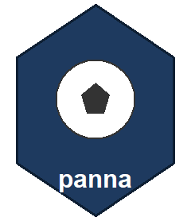

Clean Opta summary goal events: drop phantom copies, credit own goals
Source:R/utils.R
dot-clean_goal_events.RdTwo defects in opta_events.parquet's event_type == "goal" rows, both
found in the 2026-10-11 codebase review:
Phantom copies. Older feeds (in the RAPM leagues: about all matches 2014-2017, about 30\ twice: once timed, once at minute 0 second 0 (the scraper's fallback when a goal record has no time). Counted by team, a 2-1 becomes 4-2, and in the splint timeline the copies all land at kick-off. A row at 0:00 is dropped when the same player has a timed goal in that match, one copy per timed goal. A genuine untimed goal by a player who also scored a timed one is indistinguishable and is dropped too (about 2 of 238k matches in the 2026-10 corpus).
Wrong team, including own goals (R022). An own goal row carries the CONCEDING team, so Fulham 1-1 Man Utd (Martinez OG) counted 0-2, and some older rows carry the wrong team outright. Each goal is matched to its goal shot (same match and player, nearest minute within 2; old seasons store minute+1 and second 0) and takes the shooter's team, or the opponent when the shot has Opta's own-goal qualifier 28.